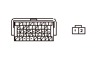
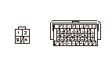
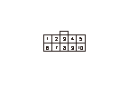
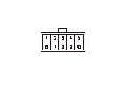

シフト ロック システム回路故障診断
HDSによるシフト ロック ソレノイドの点検
1-1
HDSをデータ リンク カプラに接続する
1-2
HDSのATテスト モード メニューから各種テストを選択し、各種テスト メニューのシフト ロック ソレノイド テストでシフト ロック ソレノイドの点検を行う
◆ シフト ロック ソレノイドは正常か
YES
-
ステップ
2
へ進む
NO
-
ステップ
5
へ進む
HDSによる
ブレーキ スイッチ回路の点検
2-1
HDSのATテスト モード メニューからデータ リストを選択し、データ リストのブレーキSWの表示を確認する
2-2
ブレーキ ペダルを踏んだときにブレーキSWがONの表示になり、ペダルを離したときにOFFの表示になるかを確認して、ブレーキ スイッチ回路の点検を行う
◆ ブレーキ スイッチ回路は正常か
YES
-
ステップ
3
へ進む
NO
-
ステップ
9
へ進む
HDSによるATPP回路の断線点検
3-1
HDSのデータ リストでAT P SWの表示を確認する
3-2
セレクト レバーをPポジションにしたときにAT P SWがONの表示になり、Pポジション以外にしたときにOFFの表示になるかを確認してATPP回路の点検を行う
◆ ATPP回路は正常か
YES
-
ステップ
4
へ進む
NO
-
ステップ
10
へ進む
HDSによるアクセル ペダル センサ1の入力信号の確認
4-1
HDSのデータ リストでアクセル ペダル センサ1の表示を確認する（アクセル ペダルは踏まないこと）
◆ 表示は5%以上または1.16V以上か
YES
-
アクセル ペダル ポジション センサの点検を行う
NO
-
新品のPGM-FI ECUで再点検する
シフト ロック ソレノイド電源回路の点検
5-1
イグニッション スイッチをLOCK（0）にする
5-2
センタ コンソールを取外す
5-3
シフト ロック ソレノイド カプラの接続を外す
5-4
イグニッション スイッチをON（
II
）にする
5-5
シフト ロック ソレノイド カプラのNo.1端子とボディ アース間の電圧を測定する
◆ バッテリ電圧か
YES
-
ステップ
6
へ進む
NO
-
シフト ロック ソレノイド カプラのNo.1端子とヒューズ ボックス間のコードの短絡または断線、またはヒューズ ボックス内No.22（7.5A）ヒューズの溶断
SLS回路の点検
6-1
セレクト レバーをPポジションにしてブレーキ ペダルを踏込む、アクセル ペダルは踏まない
6-2
ブレーキ ペダルを踏込んだまま、シフト ロック ソレノイド カプラのNo.1とNo.2端子間の電圧を測定する
◆ バッテリ電圧か
YES
-
ステップ
7
へ進む
NO
-
ステップ
8
へ進む
SLS回路の短絡点検
7-1
シフト ポジションはPポジションのまま、ブレーキ ペダルを離してシフト ロック ソレノイド カプラのNo.1とNo.2端子間の電圧を測定する
◆ バッテリ電圧か
YES
-
PGM-FI ECUカプラA（49P）のNo.28端子とシフト ロック ソレノイド カプラ間のコードの短絡
NO
-
シフト ロック メカニズムを点検する、シフト ロック メカニズムに異常がない場合は
シフト ロック ソレノイドを交換する
SLS回路の断線点検
8-1
イグニッション スイッチをLOCK（
0
）にする
8-2
HDSでSCS回路の短絡を行う
8-3
PGM-FI ECUカプラA（49P）の接続を外す
8-4
PGM-FI ECUカプラA（49P）のNo.28端子とシフト ロック ソレノイド カプラのNo.2端子間の導通を点検する
◆ 導通があるか
YES
-
新品のPGM-FI ECUで再点検する
NO
-
PGM-FI ECUカプラA（49P）のNo.28端子とシフト ロック ソレノイド カプラ間のコードの断線

PGM-FI ECUとブレーキ スイッチ間のBKSW回路の断線点検
9-1
イグニッション スイッチをLOCK（
0
）にする
9-2
HDSでSCS回路の短絡を行う
9-3
PGM-FI ECUカプラA（49P）の接続を外す
9-4
PGM-FI ECUカプラA（49P）のNo.42端子とブレーキ スイッチ4PカプラのNo.2端子間の導通を点検する
◆ 導通があるか
YES
-
新品のPGM-FI ECUで再点検する
NO
-
PGM-FI ECUカプラA（49P）のNo.42端子とブレーキ スイッチ間のコードの断線

シフト ポジション センサ アース回路の断線点検
10-1
イグニッション スイッチをLOCK（0）にする
10-2
シフト ポジション センサ カプラの接続を外す
10-3
シフト ポジション センサ カプラのNo.5端子とボディ アース間の導通を点検する
◆ 導通があるか
YES
-
ステップ
11
へ進む
NO
-
シフト ポジション センサ カプラのNo.5端子とアース（G101）間のコードの断線、またはアース（G101）の不良

ATPP回路の断線点検
11-1
イグニッション スイッチをON（II）にする
11-2
シフト ポジション センサ カプラのNo.2端子とNo.5端子間の電圧を測定する
◆ バッテリ電圧か
YES
-
ステップ
12
へ進む
NO
-
PGM-FI ECUカプラB（49P）のNo.14端子とシフト ポジション センサ間のコードの断線
シフト ポジション センサのATPP回路の点検
12-1
シフト ポジション センサ カプラのNo.2とNo.5端子間の導通を、セレクト レバーがPポジションのときとPポジション以外のときで点検する
◆ セレクト レバーがPポジションのときに導通があり、Pポジション以外のときに導通が切れるか
YES
-
新品のPGM-FI ECUで再点検する
NO
-
シフト ポジション センサを交換する
